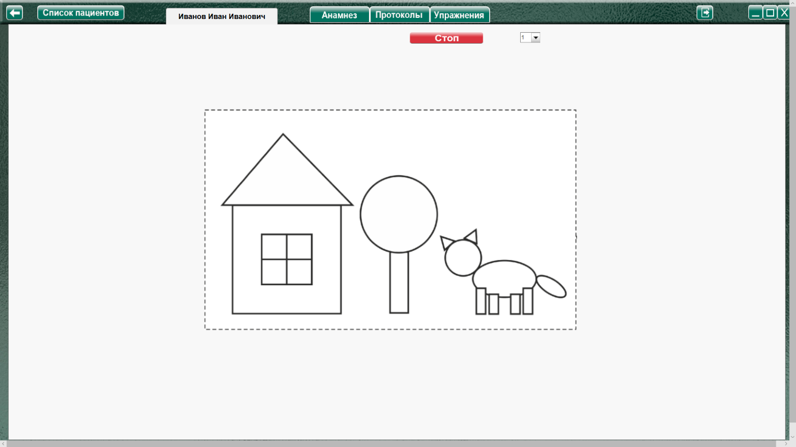

Методика «Изучение восприятия формы» (Фатихова Л.Ф.)
Методика «Изучение восприятия формы» (Фатихова Л.Ф.) описание
- Название методики: "Изучение восприятия формы"
- Автор методики (адаптации, модификации): Фатихова Л.Ф.
- Источник описания: Фатихова Л.Ф. Диагностический комплекс для психолого-педагогического обследования детей с интеллектуальными нарушениями / Л.Ф. Фатихова. – Уфа: ИЦ Уфимского филиала ГОУ ВПО «МГГУ им. М.А. Шолохова», 2011.
- Цель: изучение уровня и особенностей развития восприятия формы; выявление способности к конструированию, сформированности предметно-практических действий; выявление уровня сформированности тонкой моторики рук.
>
- Возраст: для детей дошкольного и младшего школьного возраста.
- Стимульный материал: карточка со схематичным изображением предметов, составляющих сюжетную картинку: дом, дерево и кошка; карточка со схематичным изображением девочки с воздушными шариками, состоящей из геометрических фигур и набор плоскостных фигур соответствующей формы и размера
Процедура проведения.
Исследование состоит из двух серий.
Первая серия
Ребенку предлагается карточка с сюжетным схематическим изображением (дом, дерево, кошка).
Инструкция: «Посмотри, какая интересная картинка! Что ты на ней видишь? Найди и назови фигуры, из которых составлена эта картинка. Из чего составлен дом? Собака? Дерево?».
Виды помощи
1. Если ребенок не понимает инструкцию, экспериментатор повторяет инструкцию, делая ее более развернутой;
2. Экспериментатор доводит до сознания ребенка неадекватность решения: «Неправильно, подумай еще»;
3. Экспериментатор дает более развернутую инструкцию, предлагает ребенку использовать тактильный анализатор (обводить контуры фигур пальцем), указывает на элементы изображенных предметов и спрашивает: «Это что у кошки (голова)? Какой она формы (круглая)…?»;
4. Экспериментатор сам под наблюдением ребенка начинает называть форму элементов изображения, обводя фигуры пальцем: «Это дом, он состоит из квадрата, треугольника…». Затем экспериментатор предлагает продолжить работу ребенку. При этом указания направляющего характера, типа вопросов, остаются.
Вторая серия
Ребенку предъявляется следующая карточка со схематичным изображением девочки и плоскостные геометрические фигуры.
Инструкция: «Посмотри на эту картинку. Нравится она тебе? Что здесь нарисовано? А теперь составь из этих фигур такую же картинку». После конструирования экспериментатор просит назвать геометрические фигуры, из которых построена картинка.
Виды помощи:
1. Если ребенок не понимает инструкцию, экспериментатор повторяет инструкцию, делая ее более развернутой.
2. Экспериментатор доводит до сознания ребенка неадекватность решения: «Неправильно, подумай еще».
3. Экспериментатор с помощью наводящих вопросов, указательных жестов подводит ребенка к выделению геометрических форм на образце, а затем предлагает ребенку построить картинку, используя прием примеривания.
4. Экспериментатор, используя примеривание, начинает строить картинку, комментируя все свои действия, затем предлагает ребенку продолжить работу.
Анализируемые показатели и нормативы выполнения
Правильное выполнения задания каждой серии оценивается в 3 балла. Максимальная суммарная оценка за выполнение двух серий составляет 6 баллов. За каждый вид помощи оценка за серию
уменьшается на 0,5 балла. Первый вид помощи в случае нецелесообразности его применения опускается.
Анализ результатов
Группы детей
|
Возраст
|
Баллы
|
Нормально развивающиеся дети
|
Дошкольный
|
4,5-6
|
Младший школьный
|
5-6
|
Дети с задержкой психического развития
|
Дошкольный
|
1.5–4
|
Младший школьный
|
4-5
|
Дети с умственной отсталостью
|
Дошкольный
|
0-4
|
Младший школьный
|
1.5-5
|
Нормально развивающиеся дети, начиная с дошкольного возраста, без труда выполняют задания обеих серий. Они узнают и называют как предметы, составленные из геометрических фигур, так и
сами геометрические фигуры, конструируют предметную фигуру из частей во второй серии, соблюдая все пропорции и пространственное расположение частей.
Дети с ЗПР узнают в изображениях из геометрических фигур предметы и выполняют задания как первой, так и второй серии методики самостоятельно или со стимулирующей и направляющей
помощью взрослого (второй и третий виды помощи). Однако они затрудняются в назывании некоторых форм – овала и прямоугольника. Во второй серии отмечаются некоторые деформации
конструируемой фигуры: нарушается расстояние между частями фигуры, при этом их взаиморасположение сохраняется.
Дети с умственной отсталостью испытывают трудности в узнавании схематичных изображений предметов. Особенно трудным для узнавания детей является дерево, которое они называют кругом,
мячиком или др. Дети затрудняются в назывании как основных, так и дополнительных геометрических фигур. В деятельности конструирования предметной фигуры из частей (вторая серия) наблюдаются более грубые ошибки, чем у детей с ЗПР. Часть детей данной группы не понимает первоначальную инструкцию, и им приходится предъявлять развернутую инструкцию. Наиболее продуктивными для дошкольников с умственной отсталостью оказывается четвертый вид помощи, обучающий. Трудности узнавания, называния предметов и геометрических фигур и
конструирования предметной фигуры сохраняются у детей с умственной отсталостью и в младшем школьном возрасте. Однако для школьников требуется меньшие дозы помощи, помощь взрослого при этом носит более продуктивный характер, чем в дошкольном возрасте.
Оценка результатов
Характер деятельности ребенка:
- Ребенок не понимает инструкцию.
- Ребенок понимает инструкцию, но не может выполнить задание.
- Целенаправленное выполнение задания.
- Хаотическая деятельность ребенка.
- Метод «проб и ошибок»
- Выполнение с предварительным зрительным соотнесением результата и образца.
Виды возможной помощи:
после 1 серии
- Повтор более развернутой инструкции.
- Демонстрация неадекватности решения: «Неправильно, подумай еще»
- Повтор более развернутой инструкции с предложением использовать тактильный анализатор (обводить контуры фигур пальцем) с указанием на элементы изображенных предметов и наводящими вопросами.
- Специалист сам называет форму элементов, обводя фигуры пальцем. Затем предлагает продолжить ребенку. При этом указания направляющего характера, типа вопросов, остаются.
После 2 серии
- Повтор более развернутой инструкции.
- Демонстрация неадекватности решения: «Неправильно, подумай еще»
- Применение наводящих вопросов, указательных жестов подводит ребенка к выделению геометрических форм на образце, а затем предлагает ребенку построить картинку, используя прием примеривания.
- Специалист, используя примеривание, начинает строить картинку, комментируя свои действия, затем предлагает ребенку продолжить работу.
Протокол фиксации результатов исследования
_________________________________ _______________
ФИО Дата рождения
Методика
|
Изучение восприятия формы
|
Автор методики (адаптации, модификации)
|
Фатихова Л.Ф.
|
Цель:
|
изучение уровня и особенностей развития восприятия формы; выявление способности к конструированию, сформированности предметно-практических действий; выявление уровня сформированности тонкой моторики рук.
|
Дата / специалист
|
|
Результат: баллы (макс.) /
вывод об уровне развития
|
|
Примечание
|
|
Процесс выполнения диагностического задания
|
| № серии
|
Характер деятельности ребенка
|
Виды помощи
|
Баллы
|
1
|
|
|
|
2
|
|
|
|
Итоговая оценка
|
|
Логика заполнения протокола
Заполняется автоматически
Имя специалиста – логин при входе в программу.
Дата –дата и время прохождения упражнения в формате дд.мм.гггг.
Ячейки «Характер деятельности ребенка», «Виды помощи» заполняются в зависимости от выбора специалиста в поле «Оценка результатов» либо самостоятельно.
Итоговая оценка – сумма баллов за все упражнения.
Остальные ячейки заполняются специалистом самостоятельно. При внесении не целого количества баллов, для разделения целого и десятичного значения использовать запятую. Например: 2,5
Элементы управления настройкой и выполнением упражнения
Меню настройки уровня сложности
При нажатии открывает окно, для выбора настроек необходимого уровня сложности
- Показать подсказку (демонстрация конечного результата) (в данном задании по умолчанию «выбран»)
При выборе данного пункта, с начала или во время выполнения упражнения, в левой части экрана выводится подсказка «Эталонное изображение».
- Показать трафарет (накладывание деталей картинки на цельную картинку) (в данном задании по умолчанию «не выбрано»)
При выборе данного пункта, в рабочем поле выводится трафарет для сборки картинки.
- Поворот фрагментов (по умолчанию «выбран»)
При выборе данного пункта становится «доступным» часть меню для выбора поворота фрагментов, состоящая из пунктов - выпадающих меню:
Фрагментов, повернутых на 90 о (по умолчанию «1»)
Фрагментов, повернутых на 180 о (по умолчанию «1»)
Фрагменты на 90 градусов поворачиваются влево/вправо через один.
Например:
Если выбрано фрагментов, повернутых на 90 градусов 1, то он будет повернут влево.
Если 2 – то один влево, второй вправо.
Если 3 – то 1й влево, 2й вправо, 3й снова влево.
И т.д.
Подсказки (напоминания) для вращения фрагментов
Напоминают (уведомляют), что клик левой кнопкой мыши (л.к.м.) по фрагменту поворачивает выбранный фрагмент на 90 О влево, а клик правой кнопкой мыши (п.к.м.) поворачивает выбранный фрагмент на 90 О вправо.
Выполнение упражнения
1 упражнение
Выбрать в меню задание 1. При нажатии «Начать упражнение», картинка 1 задания выводится на весь экран.

Когда специалист нажимает кнопку «Стоп» - открывается поле для оценки результата по 1 заданию. Специалист выбирает виды помощи и характер деятельности ребенка, затем по нажатию кнопки «Сформировать протокол» формируется протокол выполнения 1 задания.
Только после формирования протокола по 1 заданию можно перейти к продолжению выполнения упражнения!
Задание 2
Выбрать в меню задание 2. Появляется меню настроек уровня сложности (по умолчанию включена «подсказка», показывается в левой части экрана). Нажать кнопку «Начать упражнение». Рабочее поле - чистый прямоугольник справа с обозначенной границей (если не выбран трафарет в настройках уровня сложности).
Элементы перемещаются мышкой на рабочее поле, с зажатой левой кнопкой мыши. Поворот фрагментов влево клик левой кнопкой мыши по фрагменту, поворот вправо - правой.
Когда специалист считает задание выполненным - нажимает «Стоп», открывая поле для оценки результата по 2 заданию. Специалист выбирает виды помощи и характер деятельности ребенка, затем по нажатию кнопки «Сформировать протокол» формируется протокол выполнения 2 задания.
Когда специалист считает задание выполненным - нажимает «Стоп», открывая поле для оценки результата по 2 заданию. Специалист выбирает виды помощи и характер деятельности ребенка, затем по нажатию кнопки «Сформировать протокол» формируется протокол выполнения 2 задания.